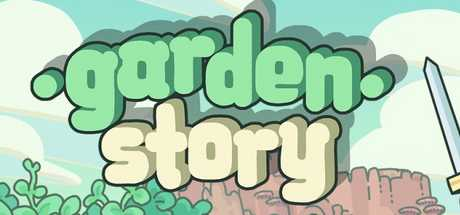

Garden Story

| Release Date: | August 11th, 2021 |
| Genre: | Adventure RPG |
| Developer: | Picogram |
| Platform: | PC, Mac, Nintendo Switch, and Xbox One |
| Details: | Steam |
Garden Story is an Adventure RPG indie game made by Picogram. You play as the young greenling grape named Concord, who is named the island's newest Guardian and set out to aid the Grove's various towns and seek out the source of the rot. The gameplay is similar to the 2D Zelda games, but mixes in farm-like elements to provide other tasks to accomplish between main story adventures. I came to learn about the game at the Rose City Games booth at Portland's Retro Gaming Expo in 2023 and played the demo at their booth. It felt pretty fun to play and put it onto the wishlist. Now after completing it after ~11 hours, it was a fun short adventure!
Story & Worldbuilding
The story is pretty simple. As mentioned before, you play as Concord, a young greenling that lives as a gardener. Living within Hamlet, the spring area of The Grove, you're approached by Plum, one of the last known Guardians of The Grove. He proclaims you as a new guardian, and that the villages around The Grove need help rebuilding and fending off the ever-growing Rot. You travel across The Grove, visiting the other season-themed villages and provide aid to them, each getting you a step closer towards the Rot's origin and how to deal with it.
It's a simple story, but it's fine enough. The world itself is pretty fun to explore around, and enjoyable to see how your actions in helping each town allows them to grow. As you help each village, connections between each of them get restored and the town's moods improve. There is optional lore that can be unlocked in each town's library as you donate items to them. While I didn't read them, a quick glance showed to be that they provide backstory to the founding of each town, and what previous guardian's resided in their village.
Gameplay
Gameplay-wise, it very similar to other 2D adventure RPG games. As you progress through the game, you gain access to different weapons to combat the Rot with, each with their own unique controls. Monster variety is pretty low, with most types of Rot being recolored versions of each other. Each area tends to have one unique type of Rot, but using the right tool on it turns it back into a normal one. There are a couple dungeons throughout the game that provide a mixture of puzzle-solving and combat, each ending with a unique boss. It's not too hard of combat, after about the 2nd dungeon it was real easy to rush through the rest of the game, but that's mainly due to how strong you can become with upgrading your stats.
The game does introduce a bit of farming to the gameplay loop, which breaks up the need of progressing the story. Each town have three aspects that you can level up by completing daily quests. These quests vary from defeating monsters, collecting resources, repairing structures, etc. As you level up each village, they'll unlock more upgrades for Concord's equipment, requiring both currency and resources. These resources can also be used to repair bridges around the world, making it easier to traverse between locations, or build new storage chests and notice boards, to reduce the amount of backtracking you may need to do. While the resource collection can feel like a bit of a grind, I really like the idea of building functional structures around the world, as it helps make the adventuring portion of the game easier.
Visuals & Audio
The game gives off some nice cozy vibes. The pixel art used throughout the game is very pleasant, and really gives the seasonal vibes between each of the four areas. The music wasn't as strong, as the most notable ones were during story portions of the game, but they do fit each of their themes well. Just didn't stand out as much as the graphics. My one gripe with the graphics though is that the game is locked to 30 FPS. I understand that this is a technical limitation, with some of the game logic tied to the framerate of the game, but it took quite a while to get used to it.Overall Thoughts
Garden Story is a really cozy game that is a nice palette cleanser from more dense games of the genre. There's not too much difficulty to the game, and there's nothing forcing you to process the story at any point. You can probably rush to the end of the game in a single sitting, but it's enjoyable to take things slower, growing the villages and collecting resources to aid in your adventure. The game doesn't innovate on much of what the genre has to offer, but it succeeds in what it strives to be and it's fun, what's more to ask? I could see it as a good entry-point game for newer players to the RPG genre. For myself, it was bite-sized enough to not be a major time-commitment, yet fun enough for me to see the game through to the end.